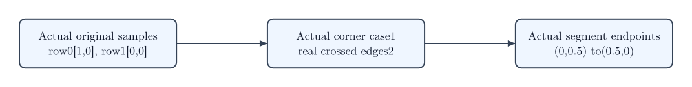
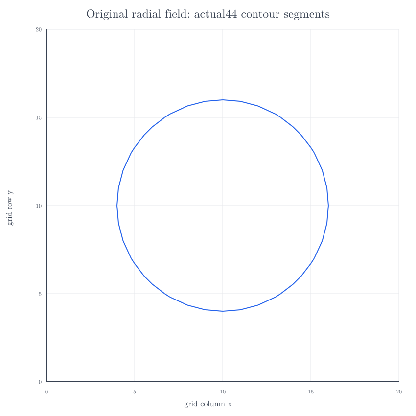
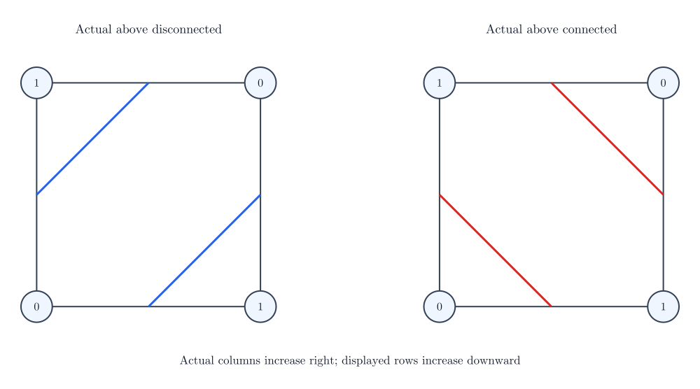
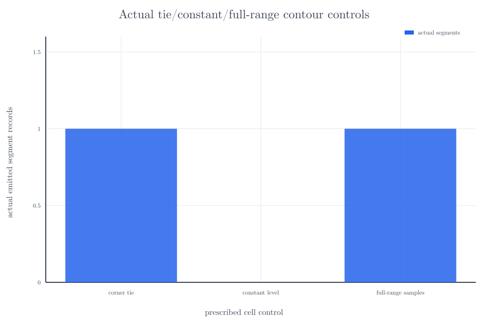

Marching squares contour segments
Abstract
Marching squares classifies four grid-cell corners and connects interpolated edge crossings. We retain the original21-by21 radial field and radius-six midpoint observations, expose actual cell/interpolation records, and make the formerly implicit saddle connectivity explicit. Returned segments are independent cell pieces, not a stitched exact level-set certificate.
Tiny classified cell and real crossed edges
Grid column is x and row is y. Corner bits1,2,4,8 correspond to row0-left,row0-right,row1-right,row1-left. A corner is above when its sample is at least the finite requested level; equality therefore belongs to the above class. An edge crosses only when its two endpoint classifications differ. For a crossed edge with samples f_a,f_b, the interpolation fraction is t=(iso−f_a)/(f_b−f_a), and its point is p_a+t*(p_b−p_a).
For rows[1,0] and[0,0] at level0.5, only row0-left is above, giving case1. The actual crossed edges are row0 horizontal and column0 vertical, at(0.5,0) and(0,0.5). The method connects those native points. The old implementation evaluated every cell edge, including unused constant edges with a zero denominator; the new producer interpolates only genuinely crossed edges.
#include <dm/dm.hpp>
int main() {
std::filesystem::create_directories("build");
auto t = dm::algorithms::marching_squares_trace({{1, 0}, {0, 0}}, .5);
std::print("| actual edge0:row0,1:col1,2:row1,3:col0 | actual first sample | actual second sample | " "actual fraction | actual x | actual y |\n| ---: | ---: | ---: | ---: | ---: | ---: |\n");
for (auto &c : t.crossings)
std::print("| {} | {} | {} | {} | {} | {} |\n", c.edge, c.first_value,
c.second_value, c.fraction, c.point[0], c.point[1]);
auto &s = t.analysis.segments.front();
dm::graphics::Diagram d;
d.node("grid", {0, 0}, "Actual original samples\nrow0[1,0], row1[0,0]").node("mask", {6, 0}, std::format("Actual corner case{}\nreal crossed edges{}", t.cells.front().case_index, t.crossings.size())).node("segment", {12, 0}, std::format("Actual segment endpoints\n({},{}) to({},{})", s[0], s[1], s[2], s[3])).edge("grid", "mask").edge("mask", "segment");
d.save_svg("build/marching_tiny.svg");
}| actual edge0:row0,1:col1,2:row1,3:col0 | actual first sample | actual second sample | actual fraction | actual x | actual y |
|---|---|---|---|---|---|
| 0 | 1 | 0 | 0.5 | 0.5 | 0 |
| 3 | 1 | 0 | 0.5 | 0 | 0.5 |

Original radial field and measured circle deviations
Retain21 samples per axis, center(10,10), values sqrt((column−10)2+(row−10)2), and level6. The native study owns that exact prescribed field, extracts the actual44 segments using the historical saddle rule, and measures absolute radial deviation at each returned segment midpoint. The original mean near0.0215291 and maximum near0.0279425 are observations at those finitely many midpoints, not a uniform contour-error bound or a topology certificate.
Both numeric coordinate axes use the same range and physical scale, so the contour’s geometry is not stretched into an ellipse. The native segment list is plotted directly; no report-local field sampler, contour extractor, midpoint-error routine or reconstructed analytic circle supplies the figure. This synthetic field has a known exact reference and needs no external dataset.
#include <dm/dm.hpp>
int main() {
std::filesystem::create_directories("build");
auto s = dm::algorithms::marching_radial_study();
std::print("Actual grid{} by{}; actual segments {}; measured midpoint observations {}; actual mean " "radial deviation {}; actual maximum radial deviation {}.\n\n| actual segment index | actual " "x0 | actual y0 | actual x1 | actual y1 | actual midpoint radial deviation |\n| ---: | ---: " "| ---: | ---: | ---: | ---: |\n",
s.grid.size(), s.grid.front().size(), s.contour.segments.size(),
s.midpoint_errors.size(), s.mean_midpoint_error,
s.maximum_midpoint_error);
std::vector<double> x0, y0, x1, y1;
for (std::size_t i = 0; i < s.contour.segments.size(); ++i) {
auto &v = s.contour.segments[i];
std::print("| {} | {} | {} | {} | {} | {} |\n", i, v[0], v[1], v[2],
v[3], s.midpoint_errors[i]);
x0.push_back(v[0]);
y0.push_back(v[1]);
x1.push_back(v[2]);
y1.push_back(v[3]);
}
auto p = dm::graphics::RPlot::create();
p.segments(x0, y0, x1, y1, {37, 99, 235}, 2).size(850, 850).margins(95, 35,
60, 70).x_limits(0, 20).y_limits(0, 20).title("Original radial field: actual44 contour segments").x_label("grid column x").y_label("grid row y").save_svg("build/marching_original.svg");
}Actual grid21 by21; actual segments 44; measured midpoint observations 44; actual mean radial deviation 0.02152905212328376; actual maximum radial deviation 0.02794250139013421.
| actual segment index | actual x0 | actual y0 | actual x1 | actual y1 | actual midpoint radial deviation |
|---|---|---|---|---|---|
| 0 | 7 | 4.8072981333770795 | 6.704550373074293 | 5 | 0.009927852124454795 |
| 1 | 7 | 4.8072981333770795 | 8 | 4.34549563336593 | 0.02794250139013421 |
| 2 | 8 | 4.34549563336593 | 9 | 4.0841302341086925 | 0.023513624908604314 |
| 3 | 9 | 4.0841302341086925 | 10 | 4 | 0.02112150404269819 |
| 4 | 10 | 4 | 11 | 4.0841302341086925 | 0.02112150404269819 |
| 5 | 11 | 4.0841302341086925 | 12 | 4.34549563336593 | 0.023513624908604314 |
| 6 | 12 | 4.34549563336593 | 13 | 4.8072981333770795 | 0.02794250139013421 |
| 7 | 13 | 4.8072981333770795 | 13.295449626925707 | 5 | 0.009927852124453906 |
| 8 | 6 | 5.5401855145553665 | 5.5401855145553665 | 6 | 0.01800780976191607 |
| 9 | 6 | 5.5401855145553665 | 6.704550373074293 | 5 | 0.02690039933121202 |
| 10 | 13.295449626925707 | 5 | 14 | 5.5401855145553665 | 0.026900399331211133 |
| 11 | 14 | 5.5401855145553665 | 14.459814485444634 | 6 | 0.01800780976191696 |
| 12 | 5 | 6.704550373074293 | 4.8072981333770795 | 7 | 0.009927852124454795 |
| 13 | 5 | 6.704550373074293 | 5.5401855145553665 | 6 | 0.02690039933121202 |
| 14 | 14.459814485444634 | 6 | 15 | 6.704550373074293 | 0.02690039933121202 |
| 15 | 15 | 6.704550373074293 | 15.19270186662292 | 7 | 0.009927852124454795 |
| 16 | 4.8072981333770795 | 7 | 4.34549563336593 | 8 | 0.02794250139013421 |
| 17 | 15.19270186662292 | 7 | 15.65450436663407 | 8 | 0.02794250139013421 |
| 18 | 4.34549563336593 | 8 | 4.0841302341086925 | 9 | 0.023513624908604314 |
| 19 | 15.65450436663407 | 8 | 15.915869765891308 | 9 | 0.023513624908602537 |
| 20 | 4.0841302341086925 | 9 | 4 | 10 | 0.02112150404269819 |
| 21 | 15.915869765891308 | 9 | 16 | 10 | 0.02112150404269819 |
| 22 | 4 | 10 | 4.0841302341086925 | 11 | 0.02112150404269819 |
| 23 | 16 | 10 | 15.915869765891308 | 11 | 0.02112150404269819 |
| 24 | 4.0841302341086925 | 11 | 4.34549563336593 | 12 | 0.023513624908604314 |
| 25 | 15.915869765891308 | 11 | 15.65450436663407 | 12 | 0.023513624908602537 |
| 26 | 4.34549563336593 | 12 | 4.8072981333770795 | 13 | 0.02794250139013421 |
| 27 | 15.65450436663407 | 12 | 15.19270186662292 | 13 | 0.02794250139013421 |
| 28 | 4.8072981333770795 | 13 | 5 | 13.295449626925707 | 0.009927852124453906 |
| 29 | 5 | 13.295449626925707 | 5.5401855145553665 | 14 | 0.026900399331211133 |
| 30 | 15 | 13.295449626925707 | 14.459814485444634 | 14 | 0.02690039933121202 |
| 31 | 15 | 13.295449626925707 | 15.19270186662292 | 13 | 0.009927852124454795 |
| 32 | 5.5401855145553665 | 14 | 6 | 14.459814485444634 | 0.01800780976191696 |
| 33 | 6 | 14.459814485444634 | 6.704550373074293 | 15 | 0.02690039933121202 |
| 34 | 14 | 14.459814485444634 | 13.295449626925707 | 15 | 0.02690039933121202 |
| 35 | 14 | 14.459814485444634 | 14.459814485444634 | 14 | 0.018007809761917848 |
| 36 | 6.704550373074293 | 15 | 7 | 15.19270186662292 | 0.009927852124454795 |
| 37 | 7 | 15.19270186662292 | 8 | 15.65450436663407 | 0.02794250139013421 |
| 38 | 8 | 15.65450436663407 | 9 | 15.915869765891308 | 0.023513624908602537 |
| 39 | 9 | 15.915869765891308 | 10 | 16 | 0.02112150404269819 |
| 40 | 10 | 16 | 11 | 15.915869765891308 | 0.02112150404269819 |
| 41 | 11 | 15.915869765891308 | 12 | 15.65450436663407 | 0.023513624908602537 |
| 42 | 12 | 15.65450436663407 | 13 | 15.19270186662292 | 0.02794250139013421 |
| 43 | 13 | 15.19270186662292 | 13.295449626925707 | 15 | 0.009927852124454795 |

Alternating corners require an explicit topology choice
Cases5 and10 have alternating above/below corners and four edge crossings. The crossings alone permit two pairings. The historical fixed rule isolates the above corners: case5 connects left-to-row0 and right-to-row1, while case10 uses row0-to-right and left-to-row1. The default AboveDisconnected preserves those exact original pairs and their order. The new explicit AboveConnected option chooses the alternative two pairs in each saddle.
Neither fixed rule is a bilinear asymptotic decider. Sample magnitudes can change the interior bilinear saddle topology while leaving the four corner signs and boundary crossings unchanged. The API exposes the user’s connectivity choice rather than implying the original fixed rule resolves every continuous level-set ambiguity. The paired diagrams show actual native segments for the same case5 grid, with row zero drawn above row one for matrix readability. Their geometry is derived solely from the actual segment coordinates and corner values.
#include <dm/dm.hpp>
int main() {
std::filesystem::create_directories("build");
dm::graphics::Diagram d;
dm::graphics::DiagramNodeStyle node;
node.width = .7;
node.height = .7;
node.font_size = 16;
node.padding = 2;
node.circle = true;
std::print("| actual saddle rule0:above-disconnected,1:above-connected | actual segment index | actual " "x0 | actual y0 | actual x1 | actual y1 |\n| ---: | ---: | ---: | ---: | ---: | ---: |\n");
for (int policy = 0; policy < 2; ++policy) {
auto rule =
policy ? dm::algorithms::MarchingSaddleConnectivity::AboveConnected
: dm::algorithms::MarchingSaddleConnectivity::AboveDisconnected;
auto t =
dm::algorithms::marching_squares_trace({{1, 0}, {0, 1}}, .5, rule);
double offset = 9. * policy;
d.text({offset + 2.5, 1.2},
policy ? "Actual above connected" : "Actual above disconnected",
18);
d.path({{offset, 0}, {offset + 5, 0}, {offset + 5, -5}, {offset, -5},
{offset, 0}});
for (std::size_t i = 0; i < t.analysis.segments.size(); ++i) {
auto &s = t.analysis.segments[i];
std::print("| {} | {} | {} | {} | {} | {} |\n", policy, i, s[0],
s[1], s[2], s[3]);
dm::graphics::DiagramStroke stroke;
stroke.color =
policy ? dm::graphics::RGB{220, 38, 38}
: dm::graphics::RGB{37, 99, 235};
stroke.width = 3;
d.path({{offset + 5 * s[0], -5 * s[1]},
{offset + 5 * s[2], -5 * s[3]}}, stroke);
}
std::array<double, 4> x{0, 5, 5, 0}, y{0, 0, -5, -5};
for (std::size_t i = 0; i < 4; ++i)
d.node(std::format("p{}_{}", policy, i), {offset + x[i], y[i]},
std::format("{}", t.cells.front().values[i]), node);
}
d.text({7, -6.2},
"Actual columns increase right; displayed rows increase downward", 17);
d.save_svg("build/marching_saddles.svg");
}| actual saddle rule0:above-disconnected,1:above-connected | actual segment index | actual x0 | actual y0 | actual x1 | actual y1 |
|---|---|---|---|---|---|
| 0 | 0 | 0 | 0.5 | 0.5 | 0 |
| 0 | 1 | 1 | 0.5 | 0.5 | 1 |
| 1 | 0 | 0.5 | 0 | 1 | 0.5 |
| 1 | 1 | 0 | 0.5 | 0.5 | 1 |

Exact-level ties, finite range and complete contracts
Because equality is above, a corner exactly on the level can make two crossings coincide. A zero-length segment is retained rather than silently deduplicated; neighboring cells can also produce duplicate endpoints or pieces. Returned segments have no global stitching, contour orientation or simple-loop guarantee. A constant cell entirely equal to the level has case15 and emits nothing under this convention, despite the full cell being part of that mathematical level set.
For finite ordinary edge differences the historical interpolation arithmetic is retained. If opposite full-range samples make raw differences nonfinite, positive common scaling computes a finite between-endpoints fraction. This is a finite arithmetic fallback, not an exact location certificate. Complete finite/ragged/level/rule validation occurs even on empty or no-cell grids, and checked cell/output geometry precedes extraction. Grid-index coordinates must remain representable as adjacent exact integers in double.
Each actual cell is visited once and only crossed edges are interpolated, so validation/extraction is O(rows*columns) plus returned segments. Actual trace admission counts original scalar samples plus each real cell, crossing and emitted-segment record; default cap is one million, zero disables only that optional cap. Fields, row headers, capacities, returned/runtime copies and physical bytes are excluded. Unknown future cases are not fabricated, and captures own the complete original grid. Empty, zero-width and one-dimensional valid grids produce no cells; a radial study with no segments has no midpoint observations, with mean/max zero explicitly serving only as placeholders.
#include <dm/dm.hpp>
int main() {
std::filesystem::create_directories("build");
const double m = std::numeric_limits<double>::max();
std::vector<dm::algorithms::MarchingSquaresTrace> controls;
controls.push_back(dm::algorithms::marching_squares_trace(
{{0, -1}, {-1, -1}}, 0));
controls.push_back(dm::algorithms::marching_squares_trace({{1, 1}, {1, 1}},
1));
controls.push_back(dm::algorithms::marching_squares_trace(
{{-m, m}, {-m, m}}, 0));
std::vector<double> counts;
std::print("| prescribed control0:corner-tie,1:constant-level,2:full-range | actual case | actual " "interpolations | actual segments |\n| ---: | ---: | ---: | ---: |\n");
for (std::size_t i = 0; i < controls.size(); ++i) {
auto &t = controls[i];
std::print("| {} | {} | {} | {} |\n", i, t.cells.front().case_index,
t.analysis.work.interpolations, t.analysis.segments.size());
counts.push_back(t.analysis.segments.size());
}
std::print("\n| actual control | actual edge | actual finite fraction | scaled fallback |\n| ---: | " "---: | ---: | --- |\n");
for (std::size_t i = 0; i < controls.size(); ++i)
for (auto &c : controls[i].crossings)
std::print("| {} | {} | {} | {} |\n", i, c.edge, c.fraction,
c.scaled);
auto &s = controls[0].analysis.segments.front();
std::print("\nActual retained corner-tie segment ({},{}) to({},{}).\n",
s[0], s[1], s[2], s[3]);
auto p =
dm::graphics::RPlot::barplot(counts,
{"corner tie", "constant level",
"full-range samples"}, "actual segments",
{37, 99, 235});
p.x_label("prescribed cell control").y_label("actual emitted segment records");
p.y_limits(0, 1.6).title("Actual tie/constant/full-range contour controls").save_svg("build/marching_controls.svg");
}| prescribed control0:corner-tie,1:constant-level,2:full-range | actual case | actual interpolations | actual segments |
|---|---|---|---|
| 0 | 1 | 2 | 1 |
| 1 | 15 | 0 | 0 |
| 2 | 6 | 2 | 1 |
| actual control | actual edge | actual finite fraction | scaled fallback |
|---|---|---|---|
| 0 | 0 | -0 | false |
| 0 | 3 | -0 | false |
| 2 | 0 | 0.5 | true |
| 2 | 2 | 0.5 | true |
Actual retained corner-tie segment (0,0) to(0,0).

Verification and references
Native tests exhaust all16 corner masks under both explicit saddle rules, check
exact crossed-edge midpoints and selected pairs, retain the original44-segment
radial field and midpoint observations, verify affine-field crossings and actual
segment spans, and cover exact-level degeneracy, unused constant edges, opposite
maximum samples, complete finite/shape/rule guards, no-cell cases, exact capture
admission and ownership. The ten-report batch passes 95 CTest cases, 30 directly
instrumented ASan/UBSan cases, 121 compiled and executed public examples,
601/601 scoped documentation definitions and 11 representative hovers.
Independent integer, Fraction, graph, string and NumPy references verify 82,729
records, including the complete original seeded LSH study. Frozen comparisons
preserve ordinary legacy results; malformed-input, sentinel-collision, ownership
and explicit-budget corrections are documented above. Thirteen checkout headers
and thirteen installed headers compile independently, and an installed-header
native consumer links and runs. Each complete report program runs against the
checkout library; all four native figures are reviewed and HTML/Markdown exports
preserve computed results and image bytes. Batch receipts:
build/mepml-conversion/batch-214-223/.
G. M. Nielson and B. Hamann(1991), The Asymptotic Decider: Resolving the Ambiguity in Marching Cubes, Proceedings of Visualization,83–91, explains why sampled corner classifications leave bilinear face connectivity ambiguous. This implementation deliberately exposes two fixed marching-squares pairings and does not claim to implement that asymptotic decider.